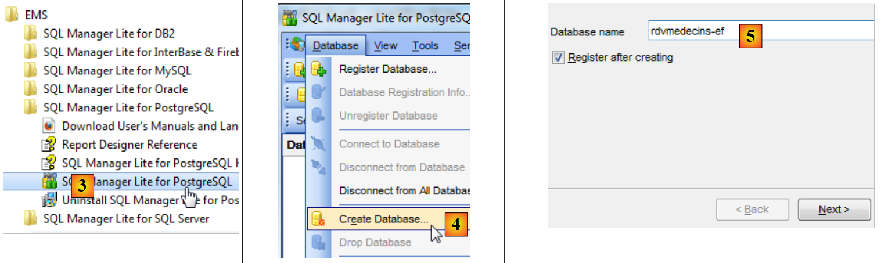
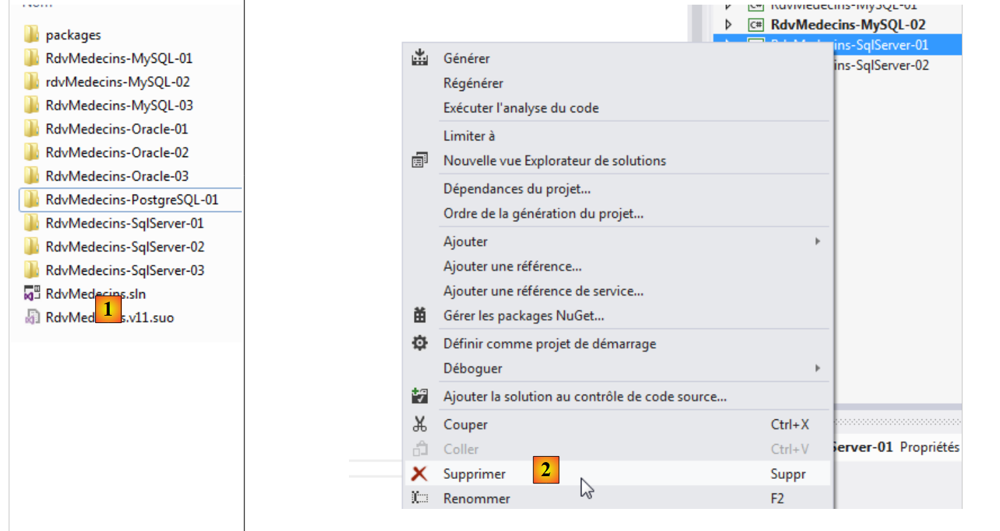
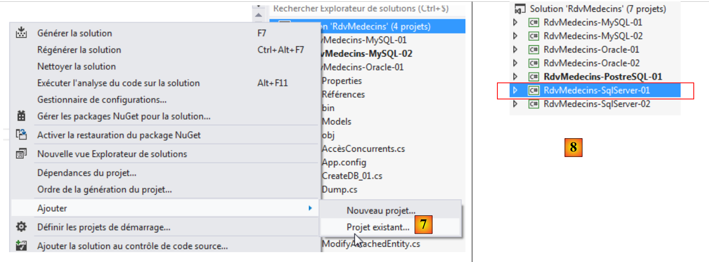
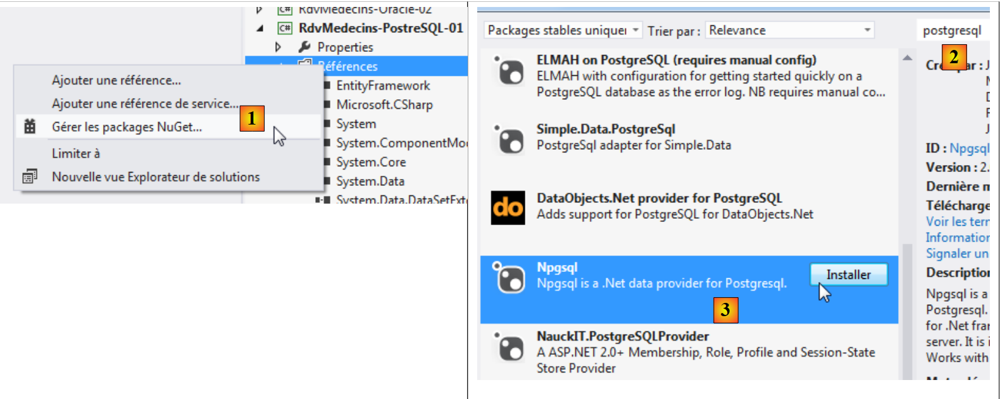
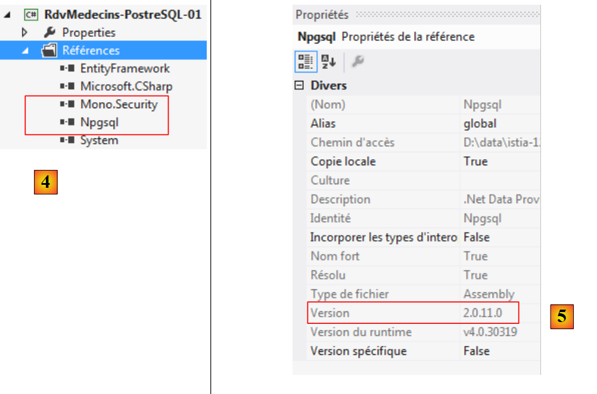
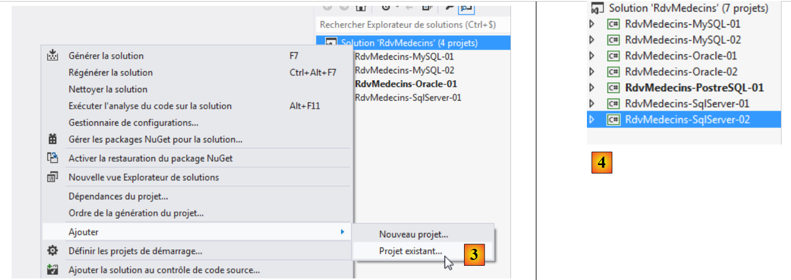
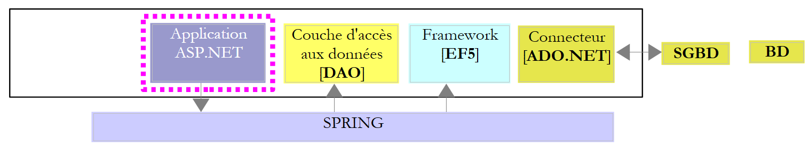
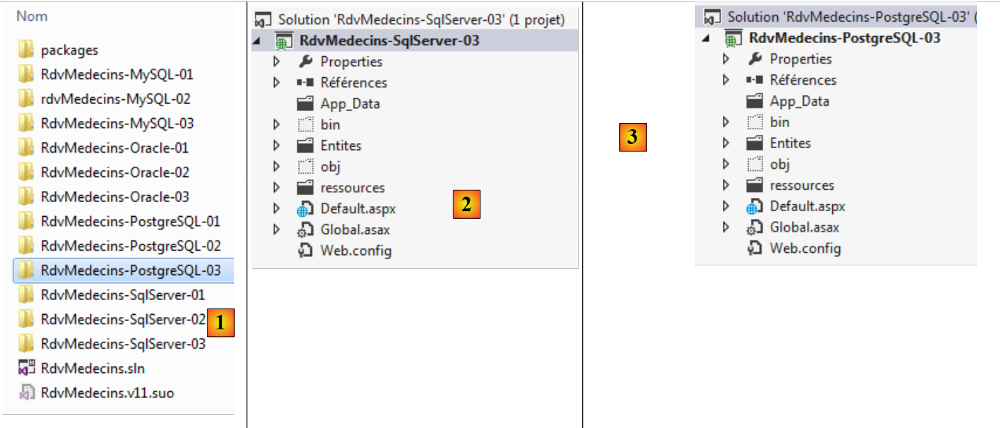

6. PostgreSQL 9.2.1 案例研究
6.1. 安装工具
需要安装的工具如下：
- 数据库管理系统（DBMS）：[http://www.enterprisedb.com/products-services-training/pgdownload#windows]；
- 管理工具：EMS SQL Manager for PostgreSQL 免费版 [http://www.sqlmanager.net/fr/products/postgresql/manager/download]。
在下面的示例中，用户 postgres 的密码为 postgres。
让我们先启动 PostgreSQL，然后启动 [SQL Manager Lite for PostgreSQL] 工具，我们将使用该工具来管理数据库管理系统。
 |
- 在[1]中，我们通过Windows服务启动PostgreSQL数据库管理系统；
- 在 [2] 中，服务已启动；
现在我们启动 [SQL Manager Lite for MySQL] 工具，我们将使用它来管理该数据库管理系统 [3]。
 |
- 在[4]中，我们创建一个新数据库；
- 在[5]中，我们指定了数据库名称；
 |
- 在 [5] 中，我们以 postgres / postgres 身份登录；
- 在[6]中，我们提供了一些信息；
- 在[7]中，我们对待执行的SQL语句进行了验证；
 |
- 在 [8] 中，数据库已创建。现在必须将其注册到 [EMS Manager] 中。信息正确。点击 [确定]；
- 在[9]中，连接到该数据库；
- 在[10]中，[EMS Manager]显示了该数据库，目前该数据库为空。请注意，表将属于名为 public 的模式 [11]。
接下来，我们将一个 VS 2012 项目连接到此数据库。
6.2. 基于实体创建数据库
首先，将 [RdvMedecins-SqlServer-01] 项目文件夹复制为 [RdvMedecins-PostgreSQL-01] [1]：
 |
- 在 [2] 中，在 VS 2012 中，我们将 [RdvMedecins-SqlServer-01] 项目从解决方案中移除；
 |
- 在 [3] 中，该项目已被移除；
- 在 [4] 中，我们添加了另一个项目。该项目取自我们之前创建的 [RdvMedecins-PostgreSQL-01] 文件夹；
 |
- 在 [5] 中，加载的项目名为 [RdvMedecins-SqlServer-01]；
- 在 [6] 中，我们将它重命名为 [RdvMedecins-PostgreSQL-01]；
 |
- 在 [7] 中，我们将另一个项目添加到解决方案中。该项目取自先前从解决方案中移除的项目的 [RdvMedecins-SqlServer-01] 文件夹；
- 在 [8] 中，[RdvMedecins-SqlServer-01] 项目已重新添加到解决方案中。
[RdvMedecins-PostgreSQL-01] 项目与 [RdvMedecins-SqlServer-01] 项目完全相同。我们需要进行一些修改。在 [App.config] 中，我们将修改连接字符串和 [DbProviderFactory]，这些内容必须根据不同的数据库管理系统（DBMS）进行适配。
<!-- connection chain on base -->
<connectionStrings>
<add name="monContexte" connectionString="Server=127.0.0.1;Port=5432;Database=rdvmedecins-ef;User Id=postgres;Password=postgres;" providerName="Npgsql" />
</connectionStrings>
<!-- the factory provider -->
<system.data>
<DbProviderFactories>
<add name="Npgsql Data Provider" invariant="Npgsql" support="FF" description=".Net Framework Data Provider for Postgresql Server" type="Npgsql.NpgsqlFactory, Npgsql, Version=2.0.11.0, Culture=neutral, PublicKeyToken=5d8b90d52f46fda7" />
</DbProviderFactories>
</system.data>
- 第 3 行：用户名和密码；
- 第 7–9 行：DbProviderFactory。第 8 行引用了一个我们没有的 DLL [Npgsql]。我们可以使用 NuGet [1] 获取它：
 |
- 在 [2] 中，在搜索框中输入关键词 postgresql；
- 在 [3] 中，选择 [Npgsql] 包。这是一个用于 PostgreSQL 的 ADO.NET 连接器；
 |
- 在 [4] 中，已添加两个引用；
- 在 [5] 中，位于 [App.config] 文件内，您必须指定 DLL 的正确版本。您可以在其属性中找到该版本信息。
在 [Entities.cs] 文件中，您需要调整将要生成的表的架构：
[Table("MEDECINS", Schema = "public")]
public class Medecin : Personne
{...}
[Table("CLIENTS", Schema = "public")]
public class Client : Personne
{...}
[Table("CRENEAUX", Schema = "public")]
public class Creneau
{...}
[Table("RVS", Schema = "public")]
public class Rv
{...}
我们在之前创建 PostgreSQL 数据库时看到，这些表属于一个名为 public 的模式。
我们配置项目的执行：
 |
- 在[1]中，我们为将要生成的程序集指定了一个不同的名称；
- 在 [2] 中，我们还指定了一个不同的默认命名空间；
- 在 [3] 中，我们指定了要执行的程序。
在此阶段，没有编译错误。让我们运行 [CreateDB_01] 程序。我们得到以下异常：
我们记得在 MySQL 和 Oracle 中都遇到过相同的错误。这与实体中 Timestamp 字段的类型有关。我们进行与 Oracle 相同的修改。在实体中，我们将以下三行代码替换为
[Column("TIMESTAMP")]
[Timestamp]
public byte[] Timestamp { get; set; }
如下所示：
[ConcurrencyCheck]
[Column("VERSIONING")]
public int? Versioning { get; set; }
我们将该列的类型从 byte[] 更改为 int?。在数据库管理系统中，我们将使用存储过程，在每次插入或修改行时将该整数递增 1。
我们将上述更改应用到所有四个实体，然后重新运行应用程序。随后我们收到以下错误：
第 1 行表明 PostgreSQL ADO.NET 连接器无法删除现有数据库。这与 Oracle 的情况类似。因此，我们需要使用 [EMS Manager for PostgreSQL] 工具手动创建 [RDVMEDECINS-EF] 数据库。本文不会详细描述每个步骤，仅介绍最重要的步骤。
PostgreSQL 数据库结构如下：
表结构
 |
- 在[1]中，ID 是一个类型为 serial 的主键。这种 PostgreSQL 类型是由数据库管理系统自动生成的整数。
 |
 |
 |
 |
这些表拥有与前几个示例中相同的表的主键和外键。这些外键具有 ON DELETE CASCADE 属性。
序列
与 Oracle 一样，我们在这里也创建了序列。这些是生成连续数字的生成器。共有 5 个 [1]。
 |
- 在[2]中，我们可以看到[CLIENTS_ID_SEQ]序列的属性。它生成以1为增量、从1开始直至一个非常大的值的连续数字。
所有序列均基于相同的模型构建。
- [CLIENTS_ID_seq] 将用于生成 [CLIENTS] 表的主键；
- [MEDECINS_ID_seq] 将用于生成 [MEDECINS] 表的主键；
- [SLOTS_ID_seq] 将用于生成 [SLOTS] 表的主键；
- [RVS_ID_seq] 将用于生成 [RVS] 表的主键；
- [sequence_versions] 将用于生成所有表中 [VERSIONING] 列的值。
触发器
触发器是数据库管理系统（DBMS）在表中发生某个事件（插入、更新、删除）之前或之后执行的存储过程。我们共有 4 个触发器 [1]：
 |
让我们来看一下 [CLIENTS_tr] 触发器的 DDL 代码，该触发器用于填充 [CLIENTS] 表的 [VERSIONING] 列：
- 第 1-3 行：在 [CLIENTS] 表上的每次 INSERT 或 UPDATE 操作之前；
- 第 4 行：执行过程 [public.trigger_versions()]。
过程 [public.trigger_versions()] 如下所示：
- 第 2 行：NEW 代表即将被插入或修改的行。NEW. "VERSIONING" 是该行的 [VERSIONING] 列。该列被赋予 "sequence_versions" 序列生成器生成的下一个值。因此，每当对 [CLIENTS] 表执行 INSERT 或 UPDATE 操作时，["VERSIONING"] 列的值就会发生变化。
触发器 [MEDECINS_tr, CRENEAUX_tr, RVS_tr] 的工作原理相同。这四个 ["VERSIONING"] 列的值均来自同一个序列。
用于在 PostgreSQL 数据库 [RDVMEDECINS-EF] 中生成表的脚本已放置在 [RdvMedecins / databases / postgreSQL] 文件夹中。读者可以加载并运行该脚本以创建表。
完成此操作后，即可运行项目中的各项程序。这些程序生成的结果与 SQL Server 环境下的结果相同，但 [ModifyDetachedEntities] 程序除外——该程序会因与 Oracle 环境相同的理由而崩溃。解决此问题的方法与 Oracle 环境相同。 只需将 [RdvMedecins-Oracle-01] 项目中的 [ModifyDetachedEntities] 程序复制到 [RdvMedecins-PostgreSQL-01] 项目中即可。
[LazyEagerLoading] 程序会因以下异常而崩溃：
错误的代码如下：
using (var context = new RdvMedecinsContext())
{
// crenel n° 0
creneau = context.Creneaux.Include("Medecin").Single<Creneau>(c => c.Id == idCreneau);
Console.WriteLine(creneau.ShortIdentity());
}
异常的第 1 行：报告的错误提示了连接操作，因为 LEFT 是连接关键字。由于上述代码的第 4 行要求立即加载 [Appointment] 实体的 [Doctor] 依赖项，EF 在 [APPOINTMENTS] 和 [DOCTORS] 表之间执行了连接操作。然而，似乎 ADO.NET 连接器生成了一个错误的 SQL 语句。我们将代码重写如下：
using (var context = new RdvMedecinsContext())
{
// crenel n° 0
creneau = context.Creneaux.Find(idCreneau);
Console.WriteLine(creneau.ShortIdentity());
// force the loading of the associated doctor
// it's possible because we're still in an open context
Medecin medecin = creneau.Medecin;
}
- 第 4 行：我们不通过 join 语句获取槽；
- 第8行：我们获取缺失的依赖关系。
这行得通。我们再次看到，更换数据库管理系统（DBMS）会对代码产生影响。实际上，这里的问题不在于数据库管理系统本身，而在于其 ADO.NET 连接器。
6.3. 基于 EF 5 的多层架构
让我们回到第2段中描述的案例研究。
 |
我们将首先构建[DAO]数据访问层。为此，我们将VS 2012控制台项目[RdvMedecins-SqlServer-02]复制为[RdvMedecins-PostgreSQL-02] [1]：
 |
- 在 [2] 中，删除项目 [RdvMedecins-SqlServer-02]；
 |
- 在 [3] 中，将现有项目添加到解决方案中。从刚刚创建的 [RdvMedecins-PostgreSQL-02] 文件夹中选择该项目；
- 在 [4] 中，新项目的名称与被删除的项目相同。我们将更改其名称；
 |
- 在 [5] 中，我们已更改了项目名称；
- 在 [6] 中，我们修改了部分属性，例如此处的装配体名称；
- 在 [7] 中，删除了 [Models] 文件夹，并用 [RdvMedecins-PostgreSQL-01] 项目中的 [Models] 文件夹替换。这是因为这两个项目共享相同的模型。
 |
- 在[8]中，该项目的当前引用；
- 在 [9] 中，已使用 NuGet 工具添加了 PostgreSQL ADO.NET 连接器。
在 [App.config] 文件中，将 SQL Server 数据库信息替换为 PostgreSQL 数据库信息。这些信息可在 [RdvMedecins-PostgreSQL-01] 项目的 [App.config] 文件中找到：
<!-- connection chain on base -->
<connectionStrings>
<add name="monContexte" connectionString="Server=127.0.0.1;Port=5432;Database=rdvmedecins-ef;User Id=postgres;Password=postgres;" providerName="Npgsql" />
</connectionStrings>
<!-- the factory provider -->
<system.data>
<DbProviderFactories>
<add name="Npgsql Data Provider" invariant="Npgsql" support="FF" description=".Net Framework Data Provider for Postgresql Server" type="Npgsql.NpgsqlFactory, Npgsql, Version=2.0.11.0, Culture=neutral, PublicKeyToken=5d8b90d52f46fda7" />
</DbProviderFactories>
</system.data>
Spring 管理的对象也会发生变化。目前我们有：
<!-- spring configuration -->
<spring>
<context>
<resource uri="config://spring/objects" />
</context>
<objects xmlns="http://www.springframework.net">
<object id="rdvmedecinsDao" type="RdvMedecins.Dao.Dao,RdvMedecins-SqlServer-02" />
</objects>
</spring>
第 7 行引用了 [RdvMedecins-SqlServer-02] 项目的程序集。该程序集现已更名为 [RdvMedecins-PostgreSQL-02]。
完成上述操作后，我们即可运行 [DAO] 层测试。首先，必须确保数据库已填充数据（使用 [RdvMedecins-PostgreSQL-01] 项目中的 [Fill] 程序）。测试程序会因以下异常而崩溃：
第 13 行：该消息表明错误发生在 [DAO] 层的 [GetCreneauxMedecin] 方法中。该方法如下：
// list of time slots for a given doctor
public List<Creneau> GetCreneauxMedecin(int idMedecin)
{
// list of slots
try
{
// opening persistence context
using (var context = new RdvMedecinsContext())
{
// we get the doctor back with his slots
Medecin medecin = context.Medecins.Include("Creneaux").Single(m => m.Id == idMedecin);
// returns a list of the doctor's slots
return medecin.Creneaux.ToList<Creneau>();
}
}
catch (Exception ex)
{
throw new RdvMedecinsException(3, "GetCreneauxMedecin", ex);
}
}
第 11 行：我们识别出 Include 关键字，该关键字此前曾导致程序崩溃。之前的代码可替换为以下内容：
// list of time slots for a given doctor
public List<Creneau> GetCreneauxMedecin(int idMedecin)
{
// list of slots
try
{
// opening persistence context
using (var context = new RdvMedecinsContext())
{
// returns a list of the doctor's slots
return context.Creneaux.Where(c => c.MedecinId == idMedecin).ToList<Creneau>();
}
}
catch (Exception ex)
{
throw new RdvMedecinsException(3, "GetCreneauxMedecin", ex);
}
}
新代码看起来甚至比旧代码更一致。无论如何，这次测试程序通过了。
我们按照处理 [RdvMedecins-SqlServer-02] 项目的方法创建该项目的 DLL，并将所有项目 DLL 集中到 [RdvMedecins-PostgreSQL-02] 目录下新建的 [lib] 文件夹中。这些文件将作为后续 [RdvMedecins-PostgreSQL-03] Web 项目的引用。
 |
现在，我们准备开始构建应用程序的 [ASP.NET] 层：
 |
我们将从 [RdvMedecins-SqlServer-03] 项目开始。我们将此项目的文件夹复制为 [RdvMedecins-PostgreSQL-03] [1]：
 |
- 在 [2] 中，使用 VS 2012 Express for the Web，我们打开 [RdvMedecins-PostgreSQL-03] 文件夹中的解决方案；
- 在 [3] 中，我们将解决方案名称和项目名称均进行修改；
 |
- 在 [4] 中，查看项目当前的引用；
- 在 [5] 中，我们将其删除；
- 在 [6] 中，用我们刚刚存储在 [RdvMedecins-PostgreSQL-02] 项目 [lib] 文件夹中的 DLL 的引用替换它们。
剩下的就是修改 [Web.config] 文件。我们将该文件的当前内容替换为 [RdvMedecins-PostgreSQL-02] 项目中 [App.config] 文件的内容。完成此操作后，运行 Web 项目。它运行正常。在运行 Web 应用程序之前，切记要先向数据库中插入数据。